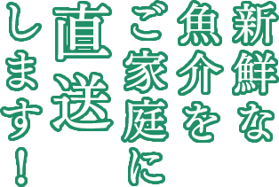
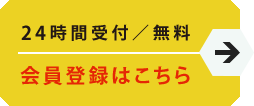
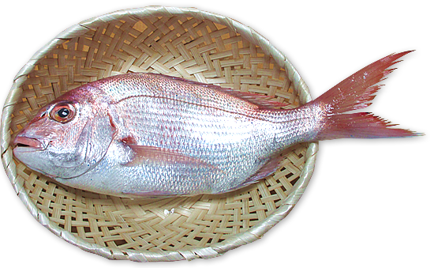
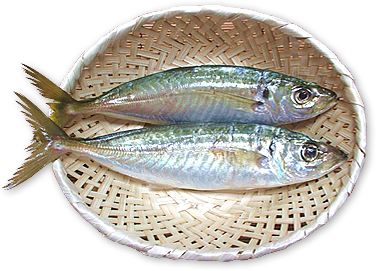
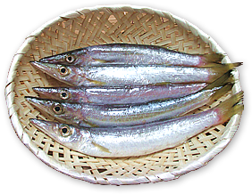
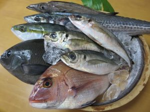
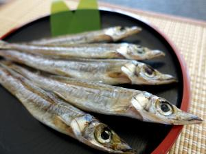

今なら登録特典として「季節のおすすめ魚介類 無料レポート」プレゼント中！



鮮魚、カニの通販・海鮮ギフトとして、お客様からたくさんのご好評のメッセージを頂いております。
-
2026年05月28日
— ４月初めに高知の笹岡さんから鮮魚を購入しました。サゴシは、昨年頂いた魚より身が柔らかい感じで きれいな形で刺身にできませんでしたが
-
2026年05月21日
— 想像していたよりも大きくびっくりしました。 すでにおろしてあったのですぐに調理ができてよかったです。 鮮度もよく、大満足です。 〇
-
2026年05月14日
— 開けてビックリ２０センチ前後のまるまるした新鮮なイワシが！！頼んだのは間違ったかなと思いました。 その日お刺身に初めて食べましたが
-
2026年05月07日
— 今回は、ヒラスズキを送って頂きましたが、なかなか市場には出回らない希少な魚で、 一度食べてみたいと思っていた魚で食べる前からワクワ
| 06 / 03 | 04 | 05 | 06 | 07 | 08 | 09 | 10 | |
|---|---|---|---|---|---|---|---|---|
| 株式会社邦美丸 | ||||||||
| 愛媛県漁業協同組合三崎支所 | ||||||||
| 株式会社笹岡水産 | ||||||||
| 本庄水産 | ||||||||
| 有福水産 | ||||||||
| 豊漁丸 | ||||||||
| 不動丸 | ||||||||
| かきの阿部、飛龍丸 | ||||||||
| 株式会社マサエイ水産加工 | ||||||||
| くろべ漁業協同組合 | ||||||||
| 福一漁業株式会社 | ||||||||
| 有限会社 昌徳丸 | ||||||||
| fl エフアイ | ||||||||
| JFいしかわ かなざわ総合市場 流通課 | ||||||||
| 株式会社カネサ相田 | ||||||||
| 永運丸 | ||||||||
| 典安丸 | ||||||||
| 山竹商店 山田勝美 | ||||||||
| 株式会社ヒマワリ |
最新の海鮮商品出荷例(5/25～6/1)※水揚状況により内容量は日々変動がございます。 |
||
|---|---|---|
| 岡山県 | 邦美丸 |
鮮魚セット 約3kg～6kg 7,680円(税・送料込み) （タイ、クロダイ、コショウダイ、ワタリガニ、カレイ） |
| 愛媛県 | 愛媛県漁業協同組合三崎支所 | 活さざえ、活あわび |
| 高知県 | 笹岡水産 |
鮮魚セット 約2kg～4kg 5,680円(税・送料込み) （ヒラソウダガツオ、ハマフエフキ、カマス） |
| 長崎県 | 有福水産 |
鮮魚セット 約4kg～8kg 9,600円(税・送料込み) (カンパチ、アジ、オオモンハタ、カワハギ) |
| 宮崎県 | 豊漁丸 | イセエビ |
| 千葉県 | 不動丸 | 蛤 |
| 北海道 | 友知さけ定置部会 | トキシラズ |
| 福岡県 | かきの阿部、飛龍丸 | 岩牡蠣 |
| 富山県 | くろべ漁業協同組合 |
さばいた鮮魚セット3-6名様分 7,680円(税・送料込み) (あじ、まだい、うすめばる、いしだい) |
| 鹿児島県 | 昌徳丸 | アカエイ |
| 徳島県 | 勝浦渡船 | ノドグロ |
| 石川県 | JFいしかわ かなざわ総合市場 流通課 | 毛ガニ |
| 静岡県 | 山竹商店 | トロえび |
鮮魚、カニ、貝のネット通販・海鮮ギフトとして、選ばれている5つの理由とは？
漁師さん直送市場は、2014年5月に鮮魚のネット通販サービスをスタートし、信頼されて現在8年目です。お陰様で、業務用と家庭用を合わせた出荷実績が10,000件を突破し、多数のメディアにも掲載されました。
鮮魚、カニ、貝の海鮮通販・海鮮ギフトとして、皆様に選ばれ続けている5つの理由をご紹介します。
海鮮商品(鮮魚・カニ・貝類など)の鮮度が抜群
漁師さん直送市場の多くの漁師さんは沿岸漁業を行っており、出漁して鮮魚・海鮮を漁獲後、その数時間等には帰港するため新鮮な鮮魚・海鮮をそのまま産地直送できます。産地によっては、血抜き、活〆、神経締めなど鮮度管理にこだわりがあります。
出荷後、最短翌日午前にお届けできるため新鮮です。
お買い得
生産者から新鮮な魚介類を産地直送・販売するため、流通が非常にシンプルです。多くの中間業者を通さずに販売するため、お買い得な価格で鮮魚・海鮮商品をご購入頂けます。
鮮魚セット(海鮮ボックス)の日付指定が可能
天候等に水揚げが大きく左右される鮮魚通販(鮮魚ギフト)では、一般的に日付指定をすることはできませんが、漁師さん直送市場では、鮮魚セット(海鮮ボックス)において日付を指定して注文することが可能となります。
日付指定が可能なので、贈答用のプレゼント・海鮮ギフトとしてもご好評いただいております。
鮮魚が不漁の際、代替出荷(安定供給)に挑戦
漁業は天候や水揚状況に大きく左右され、１つの地域だけでは鮮魚を出荷ができないことも多い状況です。漁師さん直送市場では、ある産地が不漁により鮮魚を出荷できなくなった場合、
他の地域の生産者がフォローすることで、安定的に鮮魚をお届けすることに挑戦しています。
漁師さん・漁協さんの顔が見え安心
スーパーなどで海鮮商品(鮮魚、カニ、貝類など)を購入する場合、都道府県などのおおまかな産地の記載はあるものの、どのような産地で水揚げされた魚介類か分からないことが多いかと思います。
漁師さん直送市場では、生産者の顔が見え安心です。
産地直送(産直)で販売した魚介類を中心に、おすすめのレシピをご紹介
-

2026年04月28日 16時15分
産直通販サイト『漁師さん直送市場』にて、毛ガニを販売されている生産者さんがおられました。 この記事では、毛ガニの豆知識や、通販や市場での値段、レシ …
-
2026年04月26日 23時52分
イシガキダイを通販でお取り寄せ｜旬・値段・刺身の味・おすすめレシピを解説
産直通販サイトの漁師さん直送市場において、イシガキダイを発送された漁師さんがおられました。 こちらの記事では、イシガキダイの豆知識や、通販や市場で …
-
2026年04月23日 15時58分
産直通販サイトの漁師さん直送市場において、真鱈(タラ)を発送された漁師さんがおられました。 こちらの記事では、真鱈(タラ)の豆知識や、通販や市場で …
-
2026年04月18日 01時45分
産直通販サイトの『漁師さん直送市場』において、ガンゾウビラメを発送されている漁師さんがおられました。 こちらの記事では、ガンゾウビラメの豆知識や、 …
海鮮(お魚、海老、貝など)の豆知識をご紹介
-
2024年05月13日 13時16分
産直通販サイトの漁師さん直送市場を利用してコショウダイが届きました。コショウダイにはディディモゾイドという寄生虫がついている可能性があります。人間 …
-

2022年07月09日 17時19分
通販で買えるニギスの干物や、値段はいくらかを探していますか？産直通販サイトの『漁師さん直送市場』を利用して、富山県の生産者さんから【ニギスの干物】 …
-

2022年07月02日 14時34分
産直通販サイトの漁師さん直送市場では、富山県 くろべ漁協さんが、無添加の【カワハギの干物】を産地直送の通販で販売されています。 また、鮮魚の【カワ …
-

2022年06月12日 16時36分
おすすめの魚の干物を通販でお探しですか？魚の干物の値段を知りたい。どのようなお魚や内容があるか。そんな疑問にお答えします。産直通販サイト『漁師さん …
鮮魚・カニのネット通販・海鮮ギフトとして、ご好評頂いたお客様の声
海鮮商品(鮮魚・貝類・カニなど)のネット通販・海鮮ギフトとして、ご好評頂いたお客様の声について、 販売商品毎にピックアップしてご紹介します。鮮魚セット (石川 鹿渡島定置)について
何度か利用させて頂いております。 今回もとても新鮮で本当に美味しかったです。ありがとうございます。 ７才の息子の希望で直送をはじめましたが、魚の観察もでき命の大切さ、 漁師さんが大変な思いをしてとって下さった魚を大切に頂くという事で、お陰様で親子で良い経験もできております。 またお願い致します。(埼玉のお客様)
鮮魚セット (和歌山 金栄丸)について
二回目です、先回の桜鯛やコウイカ等とてもおいしくて、孫も大喜びだったのを、ランチ仲間に話した所、 今回のお魚女子会（かなり無理がある？）になりました。 皆さん想像以上に鯛やエビ、コウイカの甘さに驚いていました。 食べきれなかった、舌平目などはお持ち帰りになり、またやろうと盛り上がりました。 北海道の魚とはまた違う、とても新鮮なお魚で歓声の後は、 ニコニコで、無口な時間が流れました。ありがとうございました。(北海道のお客様)
鮮魚セット (島根 平木屋)について
とても満足しました。 初めて、丸ごとのお魚を注文しました。今まで魚をさばいたことがなくて、初めて出刃包丁を購入して、鱗取りも購入しました。 さばくのは大変でしたが、初めて取れたての刺身を食べました！感動でした。 ヒラマサは、刺身とムニエル、鯛は塩焼き、刺身、お吸いもの、イサキは刺身用にさくにして保存。それぞれ大切に食べさせていただきます。 2週間くらい、楽しめそうです。 また、利用させてもらうと思います。よろしくお願いします。(静岡のお客様)
鮮魚セット (岡山 邦美丸)について
今回、初めて岡山の邦美丸さんに頼みました。 クロダイを初めて食べました。刺身にし、新鮮で味わった事のない美味しさでした。 余りは、あら汁にしましたがまた、出汁が凄く美味しく母も喜んでいました。 他も煮付けにしたり、焼いたりと見たことのない魚をネットで調べたり、楽しい体験でした。 貴重な魚を有り難うございました。(宮城のお客様)
サザエ(三重 俊丸)について
サザエを母の誕生日のお祝いに購入しました。 想像以上にたくさん入っていて、家族みんなでおいしくいただきました。 時々動いていて生きていることに驚きました。(京都のお客様)
紅ズワイガニ (石川県漁協 西海支所)について
とても美味しかったです。次回も頼みたいです。本当に美味しかったです。(広島のお客様)
鮮魚セット (兵庫 松栄丸)について
赤海老一キロ入りはサービス良いと思うのですが、0.5キロくらいでもう１つ魚種が入ってたら有り難かったです。 赤烏賊、赤鰈は昆布締め、火入れして食べるのは良かったのですが、そのまま刺身として食べてもあまり旨味を感じませんでした。 赤烏賊、赤海老は小分けして冷凍保存でまた後日食べられるので、送料込みでこの値段は安いと思いました。 そして梱包に関しては発泡スチロールの中の氷の当て方等が丁寧で嬉しかったです。(千葉のお客様)
生食用の殻付き牡蠣(三重 カネマン水産)について
いつも新鮮な牡蠣を届けていただき、感謝しております。 普段、生の魚介を食べない人間も美味しい美味しいと言って食べておりました。 引き続き依頼させていただこうと思います。(千葉のお客様)
鮮魚セット (三重 熊野漁協)について
色々な魚が入っていて、とても良かったです。刺身にして美味しく頂きました。(岐阜のお客様)
鮮魚セット(千葉 東安房漁協)について
想像していたよりもたくさんの新鮮なお魚が入っており、楽しめました。とても近所のお魚屋さんでは手に入らない鮮度でおなじみのスルメイカやイサキやヒラメのほか、あまり目にしたことのないウスバハギ、ウマズラハギを刺身、煮付け、焼きで、それぞれ美味しく頂きました。 また、利用させて頂きたいです。(神奈川のお客様)
一本釣り 高級鮮魚セット (愛媛 三崎漁協)について
鯛は刺身にして残りはアラ炊きにして、美味しく頂きました。 サバは棒寿司にして翌日美味しく食べました。 今回は、特に鯵が美味しかった。刺身と混布締めの寿司が美味しかった。 新鮮な魚の味を満喫しました。(奈良のお客様)
鮮魚セット(高知 九石大敷)について
九石大敷組合さんから直送してて頂いたの3回目になります。 いつもながら、輸送梱包の扱いが丁寧で、鮮度抜群でした。 恒例になっている、7人のちょとした集まりでしたが、ここのところ魚が主役になっちゃいました。 真鯵とは思えないくらい大きな鰺、刺身とナメロウにして。 はまちは大きくて量が有ったので、刺身、ぶりごま（博多風）、煮物、焼き物、醤油漬け、 真鯛は刺身と湯引きにし、仕上げは鯛茶づけに。鯛のアラ荒で潮汁も大評判でした。 石鯛は刺身に。サバは締めて、翌日棒鮨にし皆さんのお土産にしました。 これだけ、食べれば、魚が主役になりますね（笑） 全部無駄なく頂きました。御馳走様でした。(東京のお客様)
殻付き牡蠣(広島 本庄水産)について
生牡蠣Lを注文しました。ほんとうに大きくて満足でした。自分では開けられないのでレンジで加熱して口が開いたものを食べましたが本当に大きくてびっくり大満足でした。(広島のお客様)
鮮魚セット (長崎 有福水産)について
長崎県から送られてきたということにそもそも感動。 続いて開けてびっくりというところ、真鯛とヒラメとハギとイサキとむつ。 満足しつつ気になったのは、サイズが小さくても天然がいいなあ、と思わせられたこと。 真鯛についてです。以上。また注文します。(東京のお客様)
ゾウリエビ(宮崎 豊漁丸)について
以前「ゾウリエビ」の食べ方を知らなかったので、炭火で焦がしてしまい味がよくわかりませんでした。 偶然こちらのHPで「水揚げあり」と見て、思わず注文してしまいました。 大小6匹入っていて、大きいのは刺身と味噌汁。小さいのは塩茹ででいただきました。 筋肉がしっかりしていて、「伊勢海老より美味」と言われるだけ、弾力ありました。 一口目はサッパリ味ですが噛めば噛むほど甘みが出てきます。 塩茹では他のエビと旨味が違います。茹でても柔らかく、殻の隅まで身が詰まっていました。 個人的に刺身より茹でた方が感動しました。 次に機会があれば、茹でと蒸しで味わいたいです。(東京のお客様)
甘エビ（石川県漁協 西海支所）について
こんな新鮮なエビが家で味わえて凄く感動しました。 家族に大好評で、喜んでもらえてよかったです。また機会があれば是非頼みたいと思います。（兵庫のお客様）
鮮魚セット(北海道 マルホン小西漁業)について
初めての注文で不安もありましたが、届いた魚は新鮮で良いものした。 アイナメを刺身で、ニシンは焼いて、ソイとカレイは煮付けにして食べました。 特にアイナメが新鮮で美味しかったです。２回目の注文も入れました。よろしくお願いいたします。(埼玉のお客様)
活ホタテとホタテ貝柱のお得セット（北海道 イチキ大光）について
イチキ大光さんの活ホタテとホタテ貝柱のお得セットを購入しました。 注文してすぐに届いて、驚きました。 しかも冷凍じゃないのでとにかく鮮度が良かったです。 オススメの食べ方をメールで頂いてたので活ホタテは貝焼き （バター醤油味とバジルソース味）で食べてホタテの貝柱はお刺身で頂きました。 どちらも本当においしかったです。 実は嫁と子供はホタテ大好きなのですが、旦那の私はホタテがそんなに好きじゃないです。 理由としては食べた後に変な風味（臭み？）を感じるので普段からホタテは 避けていたのですが、今回は折角なので食べるととにかく臭みが無くて甘くて旨かったです。 新鮮な魚介を食べると好みが変わると聞きますが今回のホタテで納得しました。(大阪のお客様)
天然ブリ（ハマチ）神経締め（有福水産）
とても美味しかったです！ 家族と、五島出身の友人と刺身で食べたのですが、こっちじゃこんな鮮度いいコリコリの食べれない！島いた時思い出す！と言ってとても嬉しそうでした。 身はもちろん、アラや内臓まで余す事なく食べて大満足です！是非また買わせていただきます！(東京のお客様)
鮮魚セット中級（下処理有）(昭和丸)
鱈が送られてくるとの連絡に、少し不安になりながら到着を待ちました。 実は鱈は、どちらかというと、身が柔らかく独特の臭みもあり苦手な部類でした。 届いた鱈はとても大きく、悪戦苦闘のすえ、柵にし、煮付けにしました。 身がプリっとしているのが、煮てる最中から分かりました！ とてもプリプリとしていて、臭みもなく、私の知っている鱈とは別物でした。 白子もたっぷりあり、ポン酢で頂きました。スーパーの鱈とは全く違いますね。 カワハギとまこう鯛は期待通りの美味しさで、肝醤油のお刺身にしました。ご馳走様でした！(埼玉のお客様)
ハマグリ（不動丸)
思ったよりも大粒のハマグリで食べ応えがありました。焼ハマと潮汁にして頂きましたが、どちらも美味しく頂きました。 次はハマグリの天婦羅にしてみようかと思います。(埼玉のお客様)
鮮魚セット(粟島定置)
一度配送キャンセルメールをいただき、その日にすぐリベンジと再度注文し今回ようやく届きました。 リクエストとしてお願いしていたマダイはとても大きくて立派で、箱を開けた時驚きと嬉しさで思わ ず笑顔。用意していた昆布を使って贅沢に昆布締めにして食しましたが、とても味がよく大変美味し かったです。頭などはかぶと煮にし食しました。いい味でした。皮ハギはお刺身にしましたが大きさ がしっかりあったので大変美味。サバはおすすめの竜田揚げに、アジは開いてフライにし食しました が、どれも大満足の美味しさでした。諦めず注文させていただいて本当によかったです。 また天候をみて注文しようと思っております。(東京のお客様)
定置網トキシラズ(友知さけ定置部会)
この時期になると時知らずを探して注文するのですが、3kgを超えるものはなかなかありません。しかし、御社のＨＰを拝見したところ、3kg以上の時知らずがあることを知り早速注文しました。商品が届いてまず驚いたのは、処理がとても丁寧にされていることでした。エラがきれいに取り除かれているだけでなく、血抜きも十分にされていたので、生臭さもなくとても良かったです。また、焼いて食べてみましたが、脂もよくのっており、大変おいしかったです。是非ともまた注文したいと思います。(埼玉のお客様)
鮮魚・カニの通販・海鮮ギフトについて、よくあるご質問
どのように注文すれば良いですか?
上部メニューの[商品一覧]や各生産者のページに様々な魚介類(鮮魚、カニ、貝類)が掲載されておりますので、 お取り寄せしたい商品・ギフトを選択してご注文頂ければと思います。通販商品(海鮮ギフト)の到着日を指定できますか？
はい、通販商品(海鮮ギフト)によっては到着日をご指定頂けます。 上部メニューの[商品一覧(日付指定OK)]に掲載されている通販商品(海鮮ギフト)については、 魚介類の出荷日に対応した到着日をご選択頂けます。どのような支払い方法がありますか？
[日付指定OKの通販商品(海鮮ギフト)について]日付指定OKの通販商品(海鮮ギフト)については、[クレジットカード決済]、[代引き]をご利用頂けます。 [クレジットカード決済]を選択できますので、贈答用(海鮮ギフト)としてもご利用頂けます。 ※クレジットカード決済はvisaカード、masterカードのみご利用可能となります。
[水揚次第出荷の通販商品(海鮮ギフト)について]
[クレジットカード決済]、[代引き]及び[前払いの銀行振込]がご利用頂けます。 [クレジットカード決済]、[前払いの銀行振込]を選択できますので、贈答用(海鮮ギフト)としてもご利用頂けます。 ※クレジットカード決済はvisaカード、masterカードのみご利用可能となります。
海鮮商品の到着日や時間の変更は可能ですか？
[日付指定OKの通販商品(海鮮ギフト)について]注文締め切り前に限り、マイページより[キャンセル]ボタンを押下頂くことで、キャンセル可能となります。 キャンセル後、正しい到着日・時間でご注文を再登録ください。 (注文締め切り後は到着日・時間の変更を承れませんので、ご注意ください)
[水揚次第出荷の通販商品(海鮮ギフト)について]
魚介類の発送準備に入られている場合は、変更ができない場合もございますが、 変更可能な場合もございますので、システムにログイン頂き、上部メニューの[メッセージ]画面より、 生産者に直接メッセージを送って頂ければと思います。
海鮮商品のキャンセルは可能ですか？
[日付指定OKの通販商品(海鮮ギフト)について]注文締め切り前に限り、マイページより[キャンセル]ボタンを押下頂くことで、キャンセル可能となります。 (注文締め切り後はキャンセルをお受けできませんので、ご注意ください)
[水揚次第出荷の通販商品(海鮮ギフト)について]
魚介類の発送準備に入られている場合は、キャンセルができない場合もございますが、 キャンセル可能な場合もございますので、システムにログイン頂き、上部メニューの[メッセージ]画面より、 生産者に直接メッセージを送って頂ければと思います。
海鮮プレゼント(ギフト)として利用できますか？
はい、プレゼント(ギフト)としてご利用頂けます。 上部メニューの[商品一覧(日付指定OK)]の通販商品(ギフト商品)の場合、[クレジットカード決済]を選択できますので、贈答用(ギフト)としてご利用頂けます。 [商品一覧(水揚次第出荷)]の場合、お支払い方法として[クレジットカード決済]、[前払いの銀行振込]を選択いただくことでご利用頂いております。鮮魚セット(海鮮ボックス)の内容を指定できますか？
備考欄にご要望の鮮魚を記載頂ければ、水揚げの範囲内において、可能な範囲でご考慮(詰め合わせ)されるかと思います。 とはいえ、どのような鮮魚となるかは水揚内容次第となるため、ご要望にお応えできない場合もございますのであらかじめご了承頂ければと思います。特に、ご希望の鮮魚が決まっている場合、商品一覧(水揚次第出荷)の通販商品(鮮魚セット)をご選択いただき、 備考欄に「〇〇の水揚げがあるまで待ちますので、〇〇の水揚げがあった際に、出荷をお願いします。」などと記載頂ければと思います。
鮮魚は刺身で食べられますか?
鮮魚を発送する際に、おすすめの食べ方が記載されたメールが届きますので、食べ方については参考にして頂ければと思います。 （刺身にあまり向かない鮮魚もありますが、新鮮な魚介類を産地直送・販売するため、刺身で食べて頂ける鮮度となります)鮮魚の下処理はお願いできますか？
漁師直送ということもあり、申し訳ありませんが、基本的に鮮魚の下処理はお受けしていない状況となります。 海鮮ギフトとしてご利用の場合、先方が丸の魚を捌けるかご注意頂ければと思います。日付指定の商品を選択しましたが、出荷予定がないと表示されますが？
鮮魚などの水揚げが不安定で、出荷予定を定期的に登録できない生産者もおられます。 そのような生産者は出漁したタイミングで出荷予定を更新される場合もありますが、注文受付期限を過ぎてしまった場合については 「日付指定OK」の通販商品一覧には表示されますが、注文ができない場合がございます。上部メニューの「水揚次第出荷」の通販商品一覧であれば、準備ができ次第発送されますので、お届けまでお時間が掛かっても大丈夫な場合はそちらもご検討頂ければと思います。
魚の定期便(サブスク)はありますか？
はい、鮮魚セットの定期便(サブスク）サービスがございます。毎月、人気の漁師さんから魚介類を産地直送いたします。 定期便の注文は通常の注文より優先して登録され、安定供給に努めています。毎月自動で注文が登録されるため、注文のお手間も削減します。 定期便の休止や日程変更はマイページから自由に行えますので、運営事務局への電話連絡等も不要となります。魚介の通販商品・海鮮ギフトが届かない場合どうすれば良いですか？
マイページ上部の[注文履歴]-[ステータス]-[配送状況]にて、ヤマト運輸などの宅配業者の配達状況が分かるようになっています。適宜、宅配業者のコールセンタに配達状況についてお問合せください。 (そもそも、漁師さんが納品書を作成されていない場合、マイページ上部の[メッセージ]から漁師さんにお問合せください)海鮮通販商品・海鮮ギフトについて、領収書の発行は可能ですか？
海鮮通販商品・海鮮ギフトを無事発送できた場合、以下の方法で領収書をご入手可能となります。クレジットカード決済の場合、マイページ上部の[注文履歴]から、領収書を発行することが可能となります。
代引き決済の場合、発泡スチロールに張り付けられている運送会社の伝票が領収書となっています。
銀行振り込みの場合、どの口座に振り込めば良いですか？
以下の口座にお振込み頂ければと思います。なお、振込手数料はご負担くださいますよう、よろしくお願い申し上げます。
楽天銀行 第二営業支店(支店番号：252) 普通 7124681
カ）バリューデータ
ゆうちょ銀行(記号：14590、番号：13246521)
カ）バリューデータ
業務用会員数1,000店舗突破!
出荷実績50,000件を突破!
ありがとうございます

今なら登録特典として
「季節のおすすめ魚介類 無料レポート」プレゼント中！

漁師直送の新鮮な魚を産直通販で。魚介・お魚ギフトのレシピ
魚のレシピ
ヒラメ・カレイなどの平べったい魚、スズキ・クロダイなどの定番の魚、ニベ・カイワリ・ミシマオコゼなどの珍しい魚、トビウオ・サバなどの青魚など、スズキ・ブリなどの出世魚、ハガツオなどの赤身の魚など、様々な魚のレシピを集めました。
秋鮭 ウツボ 鮮魚(カレイ) 鮮魚(タチウオ) 鮮魚(カイワリ) 鮮魚(イサキ) 鮮魚(トキシラズ) 鮮魚(スズキ) 鮮魚(クロダイ)
鮮魚(ヒラ) 鮮魚(イトヨリ) 鮮魚(ホウボウ) 鮮魚(ミシマオコゼ) 鮮魚(アマダイ)
鮮魚(レンコダイ) カツオ ハガツオ 鮮魚(スマガツオ) ヒラソウダ マルソウダ 鮮魚(ナガツカ) 鮮魚(ヒラメ) 魚(ヒラスズキ)
魚(イシダイ) 魚(クエ) 魚(ヒラマサ) 魚(カンパチ) 魚(ウスバハギ)
魚(サワラ) 魚(イボダイ) 鮮魚(アカハタ) 鮮魚(シマアジ) 魚(トラギス)
魚(桜鯛) 魚(アカハゼ) 魚(ハマチ) 魚(アイナメ)
魚(ドンコ) 魚(フサギンポ) 魚(コショウダイ) 魚(オキアジ) 魚(マアジ)
魚(アンコウ) 魚(ウルメイワシ) 魚(コブダイ) 魚(トビウオ) 魚(マナガツオ)
魚(メバル) 魚(マイワシ) 魚(ウマヅラハギ) 魚(ヒメジ) 魚(ホテイウオ（ゴッコ）)
魚(アカガレイ) 魚(エソ) 魚(アカシタビラメ) 魚(ガンゾウビラメ) 魚(アカシタビラメ)
魚(ノロゲンゲ) マトウダイ クロホシフエダイ ハマフエフキ 鮮魚(ニベ)
ホッケ コロダイ ムロアジ オオモンハタ（ノミアラ） オコゼ サクラマス マゴチ 生シラス キントキダイ サンマ
釜揚げシラス シログチ カサゴ ブリ イナダ さごし マアジ マイワシ カタクチイワシ ウルメイワシ カマス
アカガレイ マサバ ゴマサバ クロソイ トビウオ タチウオ メジナ（ぐれ） マコガレイ タヌキメバル メゴチ ヤガラ ヘダイ イシガキダイ 真鱈(タラ) ガンゾウビラメ
イカ・タコのレシピ
イカは冷凍すると甘味がまして美味しいです。肉厚のコウイカなどイカ・タコのレシピを集めていきます。コウイカ ミミイカ ベイカ ヤリイカ アオリイカ
エビ・カニのレシピ
お子様も大好き。エビ・カニのレシピです。海鮮(アサヒガニ) 海鮮(伊勢海老) 海鮮(紅ズワイガニ) 海鮮(ワタリガニ) 海鮮(シラサエビ)
足赤えび ボイルズワイガニ 活ズワイガニ(松葉ガニ) 活ズワイガニ(加能ガニ) 越前ガニ 甘エビ セコガニ 香箱ガ二 ヒラツメガニ
ワタリガニ 松川エビ(ヨシエビ) サルエビ ヒラツメガニ 毛ガニ
貝類のレシピ
魚より捌くのが簡単。貝類のレシピです。海鮮バーベキューにもピッタリです。魚介(ホタテ) ベビーホタテ ホタテ貝柱 冷凍ホタテ 魚介(イワガキ) 魚介(サザエ) 魚介(蒸し牡蠣) 海鮮アヒージョ
牡蠣 ハマグリ アワビ 瀬戸貝 ヒオウギ貝
トコブシ ミヤコボラ貝 ヒオウギ貝 牡蠣(むき身) 赤貝 カンカン焼きカキ小町 牡蠣小町 殻付き牡蠣 冷凍サザエ 活ホタテ 生うに ナマコ
海藻のレシピ
ノリ・アカモクなどの海藻類のレシピです。ヘルシーです。アカモク
漁師直送の鮮魚通販。魚介・海鮮ギフトの豆知識
魚介類・おすすめギフトの特集
母の日・父の日・敬老の日など、お世話になった人への感謝の気持ちを海鮮ギフトで。人気の魚、オススメの魚・エビ・カニ・貝類。海鮮ギフト特集です。
海鮮ギフトプレゼント10選 母の日 人気の海鮮ギフト 海鮮ギフト(2021年お歳暮)
鮮魚・海鮮の豆知識
魚の豆知識です。海鮮(チダイ) 海鮮(キダイ) 海鮮(カナガシラ) 海鮮(マトウダイ) 海鮮(アマダイ)
ブリとヒラマサの違い
イカ・タコの豆知識
イカ・タコの豆知識です。イカは冷凍すると甘味が増して美味しいです。海鮮(アオリイカ) 海鮮(ホタルイカ姿干し)
貝類の豆知識
ホタテ・牡蠣などの豆知識をまとめました。海鮮(ホタテ) 海鮮(牡蠣) 海鮮 牡蠣のカンカン焼き 海鮮(サザエ) カキフライ 冷凍殻付き牡蠣
エビ・カニの豆知識
ゾウリエビ・ズワイガニの豆知識です。海鮮(ゾウリエビ) 海鮮(ズワイガニ)
干物に関する記事
産地直送(産直)でお届けした新鮮な干物に関する記事です。魚の干物 カワハギ干物 ニギス干物
生産者さんに関する記事
新鮮魚介・海鮮ボックスなどを産地直送されている生産者です。くろべ漁協 有福水産 七福丸 飛龍丸
処理に関する記事
産地直送(産直)でお届けした新鮮な魚の処理方法です。魚の旨味を引き出す方法 魚の熟成方法